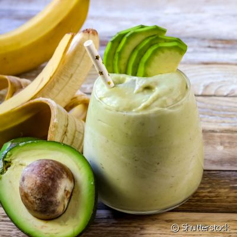

Batida de Abacate

Descrição
O Brasil se diferencia de seus irmãos da América Latina. No gigate da América do Sul, o abacate é costumeiramente consumido como uma sobremesa
Ingredientes
- Meio Abacate
- 1 Xicará de Açucar
- Meio Litro de Leite
Como Fazer
- Despeje o abacate no liquidificador com o leite e bata
- Adicione o açucar e bata
- Sirva gelado